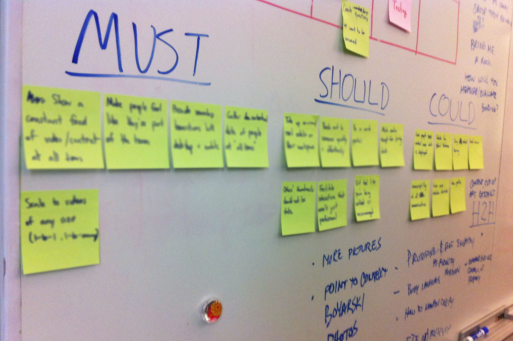
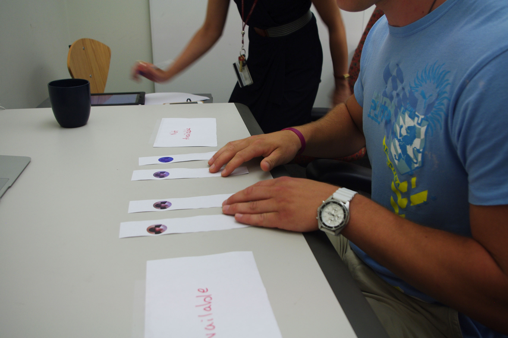
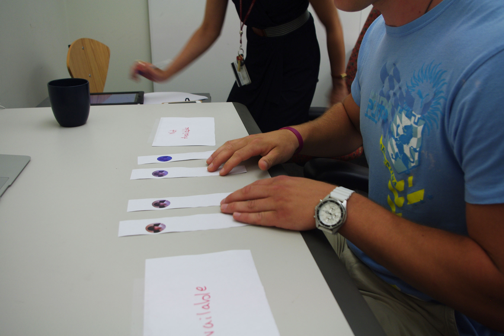
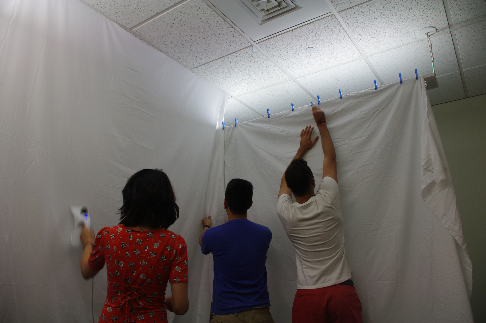
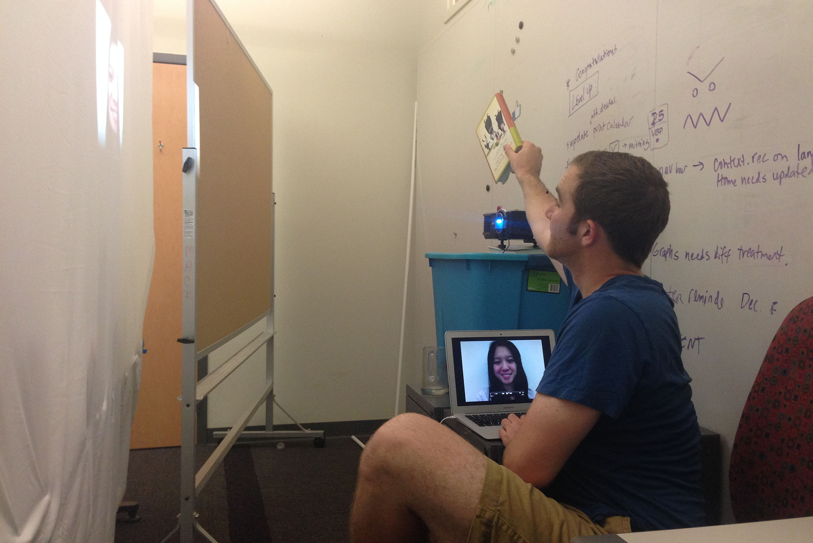
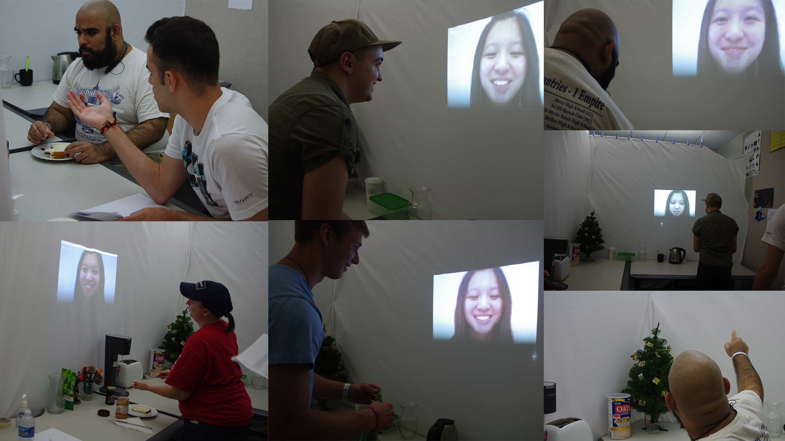

Jan 2014 - Aug 2014
Competitive Analysis
Contextual Inquiry
Guerrilla Observation
Survey and Interview
Affinity Diagramming
Flow/Sequence Model
Iterative Design
Usability Testing
UX Design Lead
- Research: Interview and Observation
- Prototyping and Interaction Design
- Data Visualization and Graphic Design
- Storyboard
- Usability Testing
Austin McCasland
Angela Ren
Sean Ro
Michael Loffredo
What do we lose during a remote collaboration that would come naturally during face-to-face?
Can technology replace unspoken cues like body language and the environment?
In 8 months, I join the research and creation of a design solution that encourages ad-hoc micro-collaborations in the enterprise 3-5 years in the future.
This is a MHCI capstone project, and our client is Cisco System, inc.
Due to the confidential nature of this project, I cannot share the ideas and designs. Nevertheless, I'm documenting the process.

We are an interdisciplinary team working in an agile environment, and we love daily scrum.
I not only involved myself in hardcore research, but also created all the graphics and storyboards.
I made the following infographics to summarize our research.


We mainly used flow model, sequence model, and affinity diagrams to synthesize our data.

According to our three key findings, I not only contributed a lot of ideas for visioning, but also clarified vision direction and paved the way for final design decision.

We speed dated our ideas with users, and now we are in iterative design phase. Starting from paper prototype, we moved on to mid-fifelity prototype on screen and finally experience similation.
 

Setting up
 
User test

Paper Prototyping
Balsamiq
Photoshop
InDesign
Sketch 3
Photography and Video Editing
Book Report